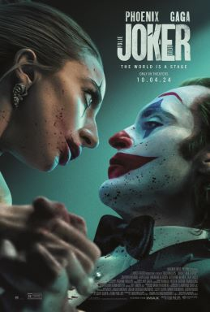

This page is going to openly talk about plot points of Joker and its sequel as well as spoiling Paddington, Peewee's Big Adventure, and Back to the Future. From this point on, we will not give you any more warnings, good luck!
Along with this, some mild language is used on this page, oh heck.
Coming out all the way back in 2019, a time when I'd still get ID'd while buying alcohol, Joker is probably what most would agree to be a psychological horror starting Joaquin Phoenix as Joker, a nobody street clown that serves as our antihero underdog.
Joker is a mixed character, while, yes, he clearly does things that are morally gray at best, the film ultimately does a good job at making him sympathetic, despite him doing things that are outright horrid. He's a good antihero to our story because he's pushed to his limits by an unloving and uncaring world. Another thing is that we as an audience know that his downfall is just around the corner. In other words, Joker (the film) is about a person who is pushed to do bad things and is punished in the end.

Despite the great success of Joker in 2019, five years later the sequel was unable to capture the same magic of its predecessor in terms of both audience reviews and at the box office.
This was a movie that I loved at the time, I felt like the darker themes and tone were something that was seriously lacking in mainstream cinema at the time and felt like the Joker movie had been completed. The story had nothing else to say. So, skipping ahead a few years, now a time where I never get asked to show my ID, I was surprised to see that there was a sequel coming out. A sequel staring... Lady Gaga? A little weird that's she's in it for sure, but I wanted to keep an open mind (metaphorical, of course, not like poor Murray in the first film), even if reviews for it were certainly mixed.
The introduction was a lot of fun, if you recall it's a Looney Tunes-esq cartoon about Joker's shadow who comes to life and basically gets into havoc. I liked this section a lot, I thought it was fun, although I had a sneaking feeling that this part was done via computer animation - there just wasn't that... feeling that this was really made on cell, it's hard to fully say. It felt too good-looking (weird negative to say for sure), but honestly, I enjoyed it so much. I can't think of any other times I've seen something like that in a film today. Unneeded to the overall plot of Joker 2, but certainly, certainly well appreciated.
Once the cartoon is over (it's about three to four minutes long) we jump into live action with what will be the main setting for the rest of the film. The jail. The whole place is full of life as much as it is full of danger, but ironically, the whole place seems incredibly lonely, especially for Arthur Fleck (the real name of Joker) whose only real friends seem to be his abusive guards who regularly parade and physically torment him. This might be one of the big issues with the film. No-one in it is particularly nice or understanding of anyone else. Arthur has no empathy for his actions, the prison guards are horrid, and Lady Gaga's character is actively lying the whole time. You just cannot relate to any of them. Arthur, while objectively evil at times, was an underdog because of his poor circumstances, we had very little time to hate him because of the flow of the film, but now the flow is a lot slower, and we have more time to be like «wait a minute, this guy is a bit of an asshole, maybe he is getting karma».
I just could not relate to him as a character. Some stories just do not need expanding on and this is one of them, at least in its current state.
That's the problem, this is way too slow. There are sections that myself and my friends (who all watched it in the movie theatre together) all agreed should be left on the cutting room floor, mostly the singing. I have zero issues with musicals, hell, one of my favorite films, The Rocky Horror Picture Show is full of camp songs, but while in Rocky, or most other musicals, the song moves the story along, Joker 2 just ends the song in the exact same place as it started. At first, it was kind of neat, there was a section where Arthur was watching TV and they were announcing that the government were considering him to be executed, at which point he busted out into a song, only for us to realize that the singing was just a fantasy in his head, but there were other times that also went into a more fantastic fantercy realm, like a section where Joker and Lady Gaga's character were dancing on a rooftop in front of a large moon. Kinda cool, but also still slowed down the whole thing.
The underdog and main character of the two films, Arthur Fleck, is a loser who is pushed to his limits by the unloving world around him, a world that only pays attention and starts to adore him once he becomes his alter ego - Joker.
And, yes, these parts were visually pretty, but did they add anything to the plot? No. But unlike with the cartoon at the start, these got old because they kept on coming up. I don't know, maybe I'd like them a lot more if they were in a different genre. They were always too slow and I needed something fast to hype me up.
Maybe the editor could have had their cake and eaten it and just moved around the parts that were used. Maybe open up with the jail, have the singing, and Arthur could have a dream that is the cartoon. Effectively to make us as an audience less damn board.
Unrelated, buuut later on I'm gonna jingle my keys in front of a bunch of people, wanna join?
∴
The night before I watched Joker 2, it was the live premiere of an episode from The Amazing Digital Circus, an independent CGI darling of animation that is posted on YouTube. One is from a multi-billion dollar company that makes its money from selling films, theme park tickets, video game tie-ins, and much more, while the other, as produced by Glitch Productions, makes its money from ad revenue, kind donations, and merch from its online store.
Somehow, despite being made with a budget and backing that's not even a drop in the ocean compared to Warner Bros. Pictures and co., independent shows like that of the American Digital Circus and others, namely Helluva Boss, Eddsworld, and Salad Fingers are all somehow more entertaining, enduring, have a higher standard for original music and storytelling than a lot of current TV and movie productions. It's kind of embarrassing.
While it's certainly not the main focus of today, episode three of The Amazing Digital Circus, titled The Mystery Of Mildenhall Manor, was genuinely creepy in such a skin-crawling way, but had some of the sweetest and, dear I say, complex character growth that I had ever seen in a story. Vs the Joker where he doesn't learn anything, he doesn't realize or really get that he did anything wrong.
Some of the best movies that I can think of is where the main character doesn't change. They are fundamentally the same at the end as they are at the start. Paddington doesn't learn anything at all, his character arc is seen off-screen, but his positivity changes his friends and the people, around him. Peewee from Peewee's Big Adventure also has no character growth, hell, everyone in his adventure stays the same as they did at the start, but we as viewers don't mind -- or even notice -- as it's a movie that changes locations almost all of the time. Peewee also works so well and we like him because he needs to get something back, even if it is as simple as a push bike.
The Joker 2 has Arthur as a loser in jail where he doesn't regret what he did and ends that way. He may certainly say that he's sorry, but this can be seen as putting on an act. The people around him are affected, sure, but it's a negative affect, like how in the cought room, as the Joker, Arthur badgers Gary Puddles (whom was a witness to one of his murders) to the point of him breaking down and crying. Garry tells Arthur that he's unable to sleep and is scared all of the time.
Marty and Doc have little to no development in Back to the Future, but that really does not matter at all. We like them because of Marty's coolness, his charm, and the fact that he's an innocent victim of bad circumstances. Doc works due to a lot of the same reasons (minus the coolness). I can go on, but this is the main issue of Joker 2. Arthur isn't suited to be our view into the world, he would be fit as the bad guy, yeah, but as someone we're meant to connect to? I don't want to connect to someone who has brought torment to others and doesn't feel remorse.
∴
Christ, I haven't even talked about Lady Gaga yet. Okay, so while I'm not one of her little monsters, I certainly enjoy her music when it comes on. «Born This Way» and «Bad Romance» are two songs that will forever be stuck in my head (but mostly due to the Weird Al and Undertale parody versions, for shame), but is her acting skills as good as her singing? Honestly, she's not bad. I think she fits the role quite well, her character (who I only realized was meant to be Harly Quin days after) can be flirty, tragic, and downright manipulative to Arthur at the exact same time.
She gives a good performance as a manic fan of Joker quite well, and, in fact, I think that all of the cast do a good job. Joker: Folie à Deux: My Initial Thoughts actually reminds me of when I talked about the 1996 Doctor Who TV Movie where all of the actors were definitely let down by the script. I'm glad that the movie opted to have Gaga in this role, and her singing ability is utilized a good amount of times (although as I said before, I feel like they went overboard with the music), and having a main character that we can't always trust is fun, but there are still parts of Harly Quin that fall down to the wayside.
In the early stages of Joker and Quin's relationship, which is very much that of a creepy fan and her idol, the two of them have sex together in what apparently leads to her being pregnant. We never see a change in Harly, she still smokes and acts recklessly, and the film doesn't put that much importance on this new element at all. I think it's only talked about one other time. I don't know if she was lying to Arthur, but regardless, it's never taken anywhere, same goes for another minor plot where Quin says that she now lives in the apartment that Joker and his mother used to live in. We see her enter the apartment, go up the steps and into the elevator and all that good stuff, but never in the room. I am a little confused as to why this is even in the final film (we do see her later on in a bathroom doing her make-up, but I couldn't tell/remember what Arthur's old bathroom looked like, if it was shown at all). It doesn't really add anything to the plot or add anything of substance.
That's the main problem - just what was typed out on the pages for the script. This just stinks and doesn't understand what made the first film so special. It let down the cast, it let down a great potential of a sequel, it let down us as an audience, and in return, we let it down in the box office where it bombed. And it bombed hard.
With an estimated budget of $200 million, Joker 2 only made back $40 million in domestic tickets at its opening weekend. That's really not good - it's downright embarrassing, and I don't want to be that guy, but it also doesn't encourage studios that they should put so much into adult-orientated movies, especially over family-friendly ones that are almost guaranteed to make their money back and more, as there will be a higher risk of bleeding out cash. It sucks that Joker 2 failed. I didn't want it to be bad, legitimately, I would rather live in a world where this was not only an amazing success, but a great film as well. Ultimately, neither the studio nor I got either.